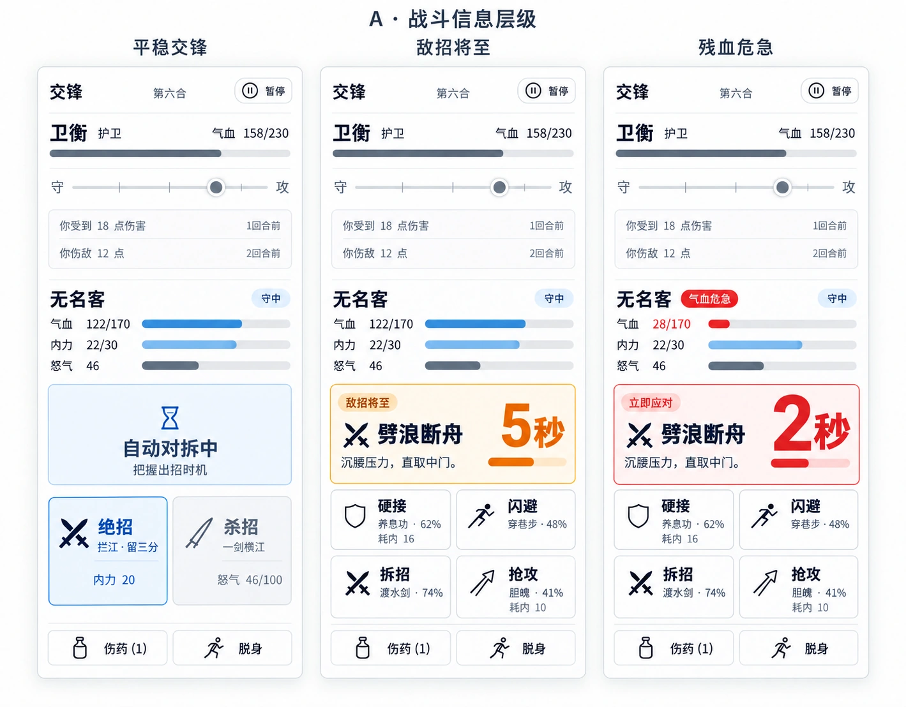

A · 同屏行动
先看来招，再做应对。
同一套布局，随战况改变字号与强调。操作位置保持稳定。

状态和近期交锋清楚可读，留出判断出招时机的余地。
招名和倒计时优先映入眼中，四种应对就在下方。
迫近的来招最醒目。低气血另作标记，伤药和脱身始终找得到。
先看当前威胁，再看自身状态；记录保持次要。蓝 · 操作琥珀 · 预警红 · 危险
A · 同屏行动
同一套布局，随战况改变字号与强调。操作位置保持稳定。

状态和近期交锋清楚可读，留出判断出招时机的余地。
招名和倒计时优先映入眼中，四种应对就在下方。
迫近的来招最醒目。低气血另作标记，伤药和脱身始终找得到。